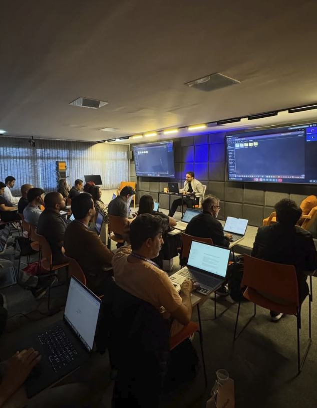

Treinamento in company construído sobre a rotina, os processos e os casos reais da sua empresa. Trilhas por área e governança desde o primeiro dia.
Turmas a partir de 12 pessoas · Online ou presencial · Carga horária personalizada
Solicitar proposta →
+10 mil
pessoas capacitadas
170
operações atendidas
Muitas empresas já liberaram ChatGPT, Copilot ou Gemini para o time e a rotina continua igual. O gargalo não é a ferramenta, é saber onde aplicar, testar no próprio trabalho e transformar isso em hábito.
Nosso objetivo é criar capacidade dentro da empresa, não ensinar mais uma ferramenta.
01
Mapeamos áreas, processos e desafios do time antes de montar o conteúdo.
02
O time aprende a usar IA com segurança, com exemplos do próprio setor.
03
Cada pessoa aplica IA em tarefas reais da rotina, durante o treinamento.
04
O time sai com autonomia para encontrar novas melhorias sozinho.
O treinamento termina. A capacidade fica.
O próprio time continua evoluindo, sem depender de consultoria.
Para quem quer desenvolver capacidade real no time.
Programa sob medida para diferentes áreas e níveis da empresa, com conteúdo e exemplos do seu contexto.
A partir de 12 pessoas · Online ou presencial · Certificado e plano de aplicação por área inclusos
Solicitar proposta →Para quem quer sensibilizar lideranças e abrir a conversa sobre IA.
Palestras, workshops e imersões sobre IA, agentes e o futuro do trabalho.
Ideal para: eventos corporativos, encontros de liderança e semanas de inovação.
A partir de 5 pessoas · Online ou presencial · Certificado e plano de aplicação por área inclusos
Consultar disponibilidade →